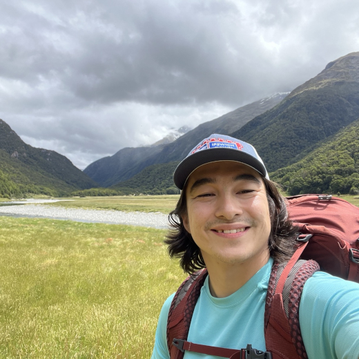

I am a postdoctoral scholar in pure mathematics at the University of Waterloo in Ontario, Canada. My postdoc mentor is Professor Doug Park. In 2025 I completed my doctorate under the guidance of Professor Ciprian Manolescu, at Stanford University. In 2018 I graduated with a Bachelor of Science degree in mathematics and physics from the University of Auckland in New Zealand. A year later, I graduated with a Bachelor of Science (Honours) degree in mathematics at the same institution.
To me, mathematics is a language and toolkit for studying shapes (manifolds). I'm particularly interested in understanding surfaces embedded in four dimensional manifolds, and have investigated these objects in the smooth and symplectic categories, typically through the lens of trisections. I've also done a lot of teaching, including starting my own class to teach undergraduate students about preparing and presenting maths talks. I've also published in the spheres of mathematics education and mathematical art.
In addition to mathematics, I like to spend my time making art (typically sculpture), backpacking, making logic puzzles, and bouldering.
Feel free to get in touch for any mathematical or non-mathematical things!
The image was taken in the Siberia valley of Mount Aspiring National Park, New Zealand.